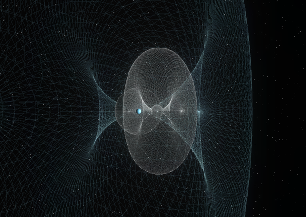

The Work-Energy Principle
Abstract
The work-energy theorem is one of the most powerful results in classical mechanics, yet its standard textbook presentation often obscures the depth of its assumptions and the breadth of its consequences. This treatise develops the work-energy principle from Newton's second law, derives the theorem for both single particles and systems of particles, and traces its generalization through Lagrangian and Hamiltonian mechanics. Along the way, we clarify the distinction between net work and work done by individual forces, address the subtle role of internal forces in deformable bodies, and show how energy methods transform intractable force-based problems into elegant scalar calculations. The result is a unified view of energy as a bookkeeping device that encodes the geometry of force along a path.
Contents
1. Introduction: Why Energy?
Newton's second law, \(\vec{F} = m\vec{a}\), is a vector equation. For a particle moving in three dimensions, it yields three coupled second-order differential equations. Solving these equations requires knowledge of the force as a function of position, velocity, and time — information that is often incomplete or computationally expensive to obtain. The work-energy theorem offers an alternative: by projecting the equation of motion along the particle's trajectory and integrating, we collapse three equations into one scalar relationship. The price of this simplification is that we lose directional information about the motion, but the gain is enormous. Energy methods let us answer questions about speed without solving for the full trajectory.
The conceptual leap is subtle but profound. Force is a vector quantity defined at each instant; work is a scalar accumulated along a path. When we pass from \(\vec{F} = m\vec{a}\) to the work-energy theorem, we are trading local, instantaneous information for global, path-integrated information. This trade-off is not merely a mathematical convenience — it reflects a deep structural feature of mechanics. Conservative forces, for which the work integral depends only on the endpoints and not on the path, give rise to potential energy functions and the conservation law \(E = KE + PE = \text{const}\). The existence of such conservation laws is, by Noether's theorem, a direct consequence of the time-translation symmetry of the underlying physics.
"The idea of energy is perhaps the most far-reaching concept in all of physics. It unifies mechanics, thermodynamics, electromagnetism, and quantum theory under a single accounting principle." — R. P. Feynman
2. Mathematical Derivation
We begin with Newton's second law for a particle of mass \(m\) subject to a net force \(\vec{F}\):
$$\vec{F}_{\text{net}} = m\vec{a} = m\frac{d\vec{v}}{dt}$$Take the dot product of both sides with the infinitesimal displacement \(d\vec{r} = \vec{v}\,dt\):
$$\vec{F}_{\text{net}} \cdot d\vec{r} = m\frac{d\vec{v}}{dt} \cdot \vec{v}\,dt = m\vec{v} \cdot d\vec{v}$$The right-hand side is an exact differential. Using the identity \(\vec{v} \cdot d\vec{v} = \tfrac{1}{2}d(v^2)\), we integrate from an initial position \(\vec{r}_i\) to a final position \(\vec{r}_f\):
$$W_{\text{net}} = \int_{\vec{r}_i}^{\vec{r}_f} \vec{F}_{\text{net}} \cdot d\vec{r} = \frac{1}{2}mv_f^2 - \frac{1}{2}mv_i^2 = \Delta KE$$This is the work-energy theorem: the net work done on a particle equals the change in its kinetic energy. Several features deserve emphasis. First, this result is exact — no approximations have been made. Second, it holds for arbitrary forces, whether conservative or non-conservative. Third, the work integral on the left is, in general, path-dependent; it is only for conservative forces that we can replace the integral with a potential energy difference and write:
$$W_{\text{net}} = -\Delta PE \implies \Delta KE + \Delta PE = 0$$which is the statement of conservation of mechanical energy. For systems with both conservative and non-conservative forces (e.g., friction), we separate the contributions:
$$W_{\text{nc}} = \Delta KE + \Delta PE$$where \(W_{\text{nc}}\) is the work done by non-conservative forces alone. This form is the most general and most useful version for practical problem-solving.
3. Applications and Physical Interpretation
The power of the work-energy theorem is best appreciated through application. Consider a block of mass \(m\) sliding down a rough inclined plane of angle \(\theta\) and length \(L\), with kinetic friction coefficient \(\mu_k\). A force-based approach requires decomposing forces into components parallel and perpendicular to the surface, solving for the normal force, computing the friction force, and then integrating the net tangential force to find the final speed. The energy approach bypasses all of this: gravity does work \(mgL\sin\theta\), friction does work \(-\mu_k mg\cos\theta \cdot L\), and the net work equals \(\Delta KE\). One equation, one unknown.

The example above illustrates a broader point: energy methods are most powerful when the question is about speeds rather than trajectories. If you need to know how fast a roller coaster is moving at the bottom of a loop, energy conservation gives the answer in one line. If you need to know the shape of the loop required for constant normal force, you need the full force analysis. Knowing when to use energy methods — and when they are insufficient — is one of the marks of physical maturity.
The work-energy framework also generalizes naturally to systems of particles, where internal forces (e.g., tension in a connecting string, molecular interactions) contribute to the total work. For rigid bodies, internal forces do no net work, and the theorem reduces to a statement about external forces alone. For deformable bodies and thermodynamic systems, internal work becomes the bridge between mechanics and thermodynamics — the "missing" mechanical energy reappears as thermal energy, completing the conservation law at a deeper level.
References
- Halliday, D., Resnick, R., and Walker, J. Fundamentals of Physics, 12th ed. Wiley, 2021. Chapters 7–8.
- Taylor, J. R. Classical Mechanics. University Science Books, 2005. Chapter 4: Energy.
- Goldstein, H., Poole, C., and Safko, J. Classical Mechanics, 3rd ed. Addison-Wesley, 2002. Chapter 1: Survey of the Elementary Principles.
Related Work
Interactive simulation environment for exploring phase portraits, bifurcations, and energy landscapes of classical mechanical systems.
Conference presentation on computational methods in classical mechanics and their pedagogical applications.